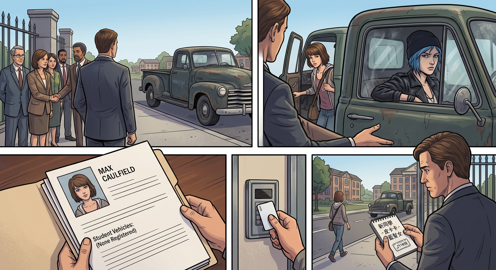

重新入學(倒敘)

一、送學路上的偶遇
新任 Wells 校長上任後,一直為找不到合適的贊助商發愁——案發陰影未散,沒有幾家企業願意在這個時間點,把自己的名字跟布萊克威爾放在一起。學校急需一波扎實的正面公關,好讓外界重新願意靠近。
某天清晨,校長正好在校門口迎接晨會來賓,恰巧看到 Max 從一輛老舊皮卡上下車,開車的是一個頂著藍色頭髮、渾身痞氣、隔著車窗都能感覺到那股「生人勿近」氣場的年輕女孩。
校長的目光在那女孩身上停留了兩秒,腦子裡幾乎是瞬間閃過一連串念頭。
「那位是?」他狀似隨意地向旁邊的助理打聽。
「Chloe Price,」助理低聲回答,「案發前被開除的學生,現在在鎮上打工。」
校長的眼睛驟然一亮,像是撿到了什麼寶貝。
二、靈光一閃
「多元、包容、給予曾經的『問題學生』重新來過的機會,」他喃喃自語,越說越興奮,「這個角度,簡直是完美的公關素材。」
他幾乎沒有猶豫,主動走上前,對著剛下車、還沒反應過來的 Chloe 露出一個過分熱情的笑容,開始滔滔不絕地遊說她重返校園——各種好聽的詞彙輪番上陣,「重新開始」「布萊克威爾的大門永遠敞開」「我們重視每一位學生的可能性」。
Chloe 全程面無表情,一句話都沒接,只是抱著手臂,眼神裡寫滿了不耐煩。
Max 站在一旁,沒有開口說任何一句話,但那雙眼睛,卻毫不掩飾地寫滿了殷切的期望,時不時偷偷瞄向 Chloe。
三、複雜的印象
回家路上,Chloe 一邊發動車子,一邊忍不住碎碎念。
「那個學校,」她皺眉,「除了那個保安大叔 Speed 還算對脾氣,」她想了想,語氣裡帶著一絲貧嘴的調侃,「Warren 那個宅男話多得跟連珠炮似的,Brooke 冷得跟塊冰似的,Kate 那種聖母心腸看著都替她累——雖然這幾個人,大概是我對那間學校少數幾個沒有負面印象的人了,但整體加起來,還是不夠抵銷我對那個地方的厭惡。」
Max 沒有反駁她的吐槽,只是安靜地坐在副駕駛座,那份寫在臉上的期望,一點都沒有淡去。
Chloe 從後照鏡瞥見她這副模樣,嘆了口氣。
「行,」她妥協地開口,「我先跟我媽和老兵商量商量。」
四、家庭會議
晚飯桌上,Chloe 把這件事說了一遍,原本以為會遭到一番說教或猶豫,沒想到 Joyce 和 David 幾乎是異口同聲地表示支持。
「這是好事,」Joyce 眼睛發亮,「妳能拿到正式文憑,以後路會好走很多。」
David 也難得地沒有多說什麼大道理,只是點頭:「我陪妳去辦手續。」
Chloe 看著兩人這副毫無保留的支持模樣,一時有點不知所措,最終只能嘴硬地聳肩:「行吧,反正你們都這麼說了。」
五、破爛的學生袍
入學典禮那天,新生們一個個穿著整齊筆挺的深色學生袍,排成整齊的隊伍,準備接受校方的正式歡迎儀式。
Chloe 站在隊伍裡,格外顯眼——她那件學生袍,底下露出的,依然是那身磨破了洞的牛仔褲、釘滿徽章的皮夾克,還有一雙沾著油漬的舊工裝靴,那件本該遮住一切的黑色長袍,怎麼看都像是勉強披在她身上、蓋不住半點桀驁氣息的裝飾品。
站在觀禮台上的 Wells 校長,目光掃過隊伍,落在 Chloe 身上時,嘴角控制不住地抽動了一下,顯然對這個「公關典範」的實際造型,有那麼一瞬間的措手不及。
就在他準備開口說些什麼的時候,身旁的科學老師 Callahan——同時也是新設數位影像實驗室的督導負責人,在校方决策上,並非全然只有校長一人说了算的角色——不動聲色地湊近,低聲說了句什麼。
Wells 校長的表情瞬間變化,原本準備發作的怒氣,硬生生轉換成一個燦爛的笑容。
「各位請看,」他對著台下的媒體鏡頭朗聲說道,「這正是布萊克威爾『擁抱多元、不拘一格』教育理念的最佳體現——我們重視的,從來不是表面的整齊劃一,而是每一個孩子獨一無二的真實自我!」
台下響起一陣稀稀落落、卻還算配合的掌聲。
Chloe 站在隊伍裡,聽著這番說辭,嘴角微不可察地抽動了一下,轉頭低聲跟身旁的 Max 咕噥:「你看,又來這套。」
Max 忍著笑,輕輕碰了碰她的手臂,沒有說話,只是那個藏不住的笑意,已經說明了一切。